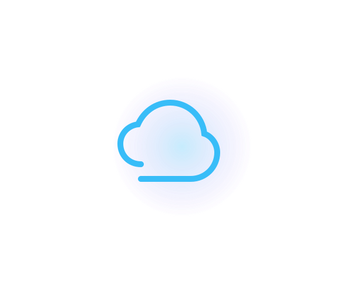
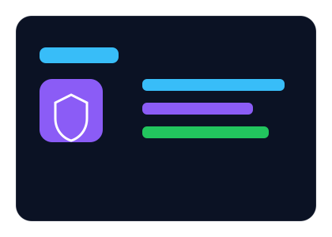
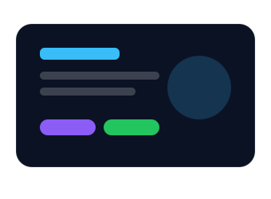

AWS
S3, CloudFront, IAM, Lambda, CloudTrail, Athena, Glue
Cloud • Infrastructure • Automation
Cloud-focused IT infrastructure support professional with nearly 2 years of production support experience, hands-on AWS projects, and a growing focus on cloud reliability, IAM security, monitoring, and automation.

AWS Cloud
IAM Security
CI/CD Basics
About Me
I have nearly 2 years of experience supporting infrastructure environments, resolving incidents, monitoring systems, and maintaining service reliability. I am currently pursuing an MSc in Cloud Computing and building hands-on AWS projects using services such as IAM, S3, Lambda, CloudTrail, Athena, Glue, and deployment automation.
Technical Skills
S3, CloudFront, IAM, Lambda, CloudTrail, Athena, Glue
Active Directory, Microsoft 365, Windows Server, Linux basics
Incident handling, alert monitoring, escalation, troubleshooting
GitHub, GitHub Actions, CI/CD concepts, Python Boto3
Featured Projects

Serverless AWS solution to analyse IAM policies and identify over-permissioned access using CloudTrail logs.
AWS Lambda • IAM • Athena • Glue • Boto3

Portfolio website hosted on AWS S3 and delivered globally using CloudFront CDN.
AWS S3 • CloudFront • IAM • GitHub Actions
Experience
Apr 2023 – Jan 2025
Contact
I’m open to Cloud, Infrastructure, IT Support, and Junior DevOps opportunities.